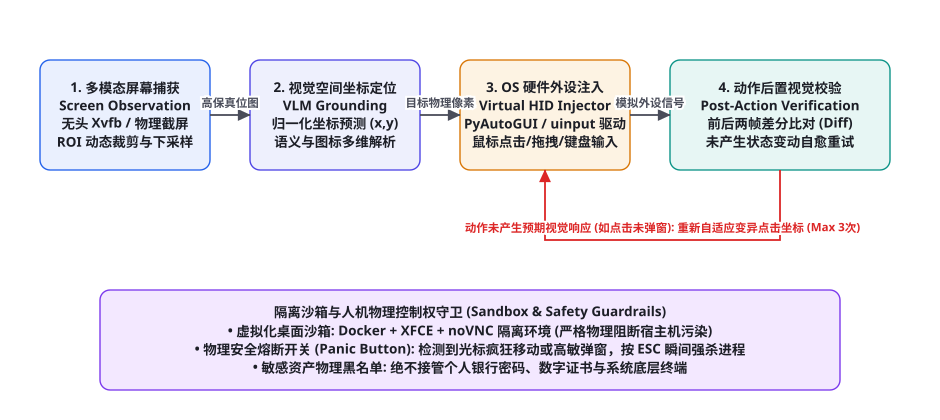
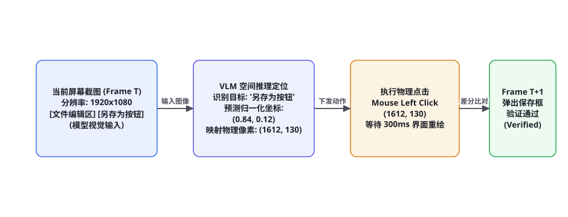

项目 9：多模态具身操作系统 Agent（Embodied & Computer Use）
当大语言模型从「文本聊天框」走向物理世界的虚拟载体——个人电脑桌面与操作系统，AI 的交互范式发生了一场划时代的革命。这就是 Anthropic 掀起的 Computer Use 与具身桌面智能体（Embodied Desktop Agent）。它不再依赖任何专门定制的 API 或特化的无障碍树，而是像一个真正坐在电脑前的人类：长着一双看懂屏幕像素的眼睛（VLM 视觉）、握着能够移动点击的鼠标和键盘（虚拟外设驱动），在真实的 Windows/macOS/Linux 桌面环境上自主打开办公软件、跨窗口拖拽排版并完成复杂长程操作。本章我们将完整手搓复刻一套工业级具身桌面操作系统智能体。
全景架构：眼睛、大脑与虚拟手足的协同闭环

很多初学者以为 Computer Use 就是「让大模型看一张图，然后调 pyautogui.click(x, y)」。在严肃的操作系统环境下，这种玩具级代码执行 3 步就会彻底崩盘：遇到高分屏缩放坐标偏移几十像素点在空地上、点击了按钮页面没有响应却盲目推进下一步导致逻辑脱节、或者遭遇软件未响应卡死。一个工业级具身操作系统 Agent 必须在以下四大架构阶段构筑坚不可摧的闭环控制：
第一阶段：高保真屏幕捕获与视觉下采样优化（Screen Capture & Token Economy）。在隔离的无头虚拟桌面容器（Docker + Xvfb / noVNC）或真机宿主中，以恒定帧率截获当前物理屏幕位图。面对 4K 甚至双屏环境，直接输入原生截屏会消耗数万视觉 Token。系统采用动态 ROI（感兴趣区域）裁剪与双三次插值降采样，将图像压缩至最佳视觉定位分辨率（如 1024x768 或 1280x800）。
第二阶段：视觉空间锚点定位与归一化回归（VLM Grounding & Coordinate Regression）。视觉语言模型接收用户目标与屏幕截屏，在纯视觉像素空间中推演目标控件（如「右上角的深红色关闭叉号按钮」或「表格第3行第2列单元格」）。模型预测出归一化的相对坐标 $(\hat{x}, \hat{y}) \in [0, 1]^2$，并由底层映射引擎换算为当前显示器的绝对物理像素坐标 $(X_{px}, Y_{px})$。
第三阶段：硬件级虚拟外设驱动注入（Virtual HID Injection）。利用 Linux 内核级 uinput 虚拟设备或跨平台原生系统外设驱动（PyAutoGUI / Quartz / Win32 API），精准模拟人类硬件外设信号：鼠标移动（带微小加速度平滑轨迹，防反爬作弊判定）、单击、双击、三击、按住拖拽、滚轮滚动以及组合快捷键（如 Ctrl+C / Cmd+V / Alt+Tab）。
第四阶段：后置状态差分验证与自愈重试（Post-Action Verification & State Diffing）。在下发任何物理手势后，系统绝不假设操作「必定成功」。调度器强制等待 300~500 毫秒（等待 GUI 线程重绘完成），重新截取当前帧画面，利用两帧像素差分与 VLM 视觉确认：页面是否弹出了预期窗口？输入框内是否真正出现了文字？若检测到界面无任何有效变动，系统自动判定动作未生效，带着上下文自适应变异坐标重新重试（图 89-1 红色自愈环）。
视觉空间坐标对齐：归一化坐标与 DPI 缩放映射

为什么 Anthropic Computer Use 协议强制采用归一化坐标？在真实电脑中，物理屏幕分辨率千差万别（1366x768、1920x1080、2560x1440、3840x2160），且操作系统通常开启了 125%、150% 或 200% 的 DPI 缩放。若模型直接输出绝对物理像素，模型就必须在提示词中死记硬背当前分辨率，极易产生严重的算术换算失真。
系统引入了「归一化相对空间坐标映射器」。大模型仅需将屏幕视为左上角为 $(0, 0)$、右下角为 $(1000, 1000)$ 的千分比正方形：
$$X_{physical} = \frac{x_{model}}{1000} \times W_{screen}, \quad Y_{physical} = \frac{y_{model}}{1000} \times H_{screen}$$
| 屏幕环境参数 | 逻辑输入坐标 (VLM) | 转换物理像素坐标 | DPI 缩放处理 |
|---|---|---|---|
| 标准 1080P 显示器 (1920x1080) | {"point": [840, 120]} | (1612, 130) | 100% 无缩放原生映射 |
| MacBook Retina 屏 (2560x1600) | {"point": [840, 120]} | (2150, 192) | 通过 NSScreen.backingScaleFactor 自动适配 2.0x |
| 高分宽屏带缩放 (3840x2160, 150%) | {"point": [840, 120]} | (3225, 259) | Win32 GetDpiForWindow 消除系统缩放错位 |
完整端到端工程实现代码
以下给出具身桌面操作系统 Agent 的核心执行引擎实现（Python + 虚拟外设控制），涵盖屏幕截图捕获、VLM 动作决策解析、外设硬件信号注入与前后态差分校验：
import time, json, re, base64
from typing import Dict, Any, Tuple
import pyautogui
# 安全配置: 开启 PyAutoGUI 全局安全保护，当鼠标快速甩至屏幕四个死角时瞬间急停
pyautogui.FAILSAFE = True
pyautogui.PAUSE = 0.2 # 每次动作后默认留出 200ms 系统响应时间
class ComputerUseAgent:
def __init__(self, vlm_client, screen_width: int = 1920, screen_height: int = 1080):
self.vlm = vlm_client
self.sw = screen_width
self.sh = screen_height
self.action_history = []
def capture_screen_base64(self) -> str:
"""捕获当前桌面高清晰度快照并转为 Base64 编码"""
screenshot = pyautogui.screenshot()
# 调整为标准视觉输入尺寸 (保持长宽比)
screenshot = screenshot.resize((1280, 720))
import io
buf = io.BytesIO()
screenshot.save(buf, format="JPEG", quality=85)
return base64.b64encode(buf.getvalue()).decode("utf-8")
def map_coords(self, norm_x: int, norm_y: int) -> Tuple[int, int]:
"""将 0~1000 范围的千分比归一化坐标转换为当前屏幕的真实物理像素"""
real_x = int((norm_x / 1000.0) * self.sw)
real_y = int((norm_y / 1000.0) * self.sh)
return real_x, real_y
def execute_physical_action(self, action_dict: Dict[str, Any]):
"""将模型决策翻译为底层的操作系统硬件事件"""
act = action_dict.get("action")
if act == "mouse_click":
x, y = self.map_coords(action_dict["coordinate"][0], action_dict["coordinate"][1])
button = action_dict.get("button", "left")
print(f"[OS Event] 鼠标移动并点击: ({x}, {y}) [按键: {button}]")
pyautogui.moveTo(x, y, duration=0.3, tween=pyautogui.easeInOutQuad)
pyautogui.click(x, y, button=button)
elif act == "double_click":
x, y = self.map_coords(action_dict["coordinate"][0], action_dict["coordinate"][1])
print(f"[OS Event] 鼠标双击: ({x}, {y})")
pyautogui.moveTo(x, y, duration=0.2)
pyautogui.doubleClick(x, y)
elif act == "drag_and_drop":
x1, y1 = self.map_coords(action_dict["start_coord"][0], action_dict["start_coord"][1])
x2, y2 = self.map_coords(action_dict["end_coord"][0], action_dict["end_coord"][1])
print(f"[OS Event] 鼠标拖拽: 从 ({x1}, {y1}) 拖拽至 ({x2}, {y2})")
pyautogui.moveTo(x1, y1)
pyautogui.dragTo(x2, y2, duration=0.6, button='left')
elif act == "type_text":
text = action_dict.get("text", "")
print(f"[OS Event] 键盘打字输入: '{text}'")
pyautogui.write(text, interval=0.04)
elif act == "hotkey":
keys = action_dict.get("keys", [])
print(f"[OS Event] 触发全局快捷键组合: {keys}")
pyautogui.hotkey(*keys)
elif act == "scroll":
clicks = action_dict.get("amount", -5)
print(f"[OS Event] 鼠标滚轮滚动: {clicks}")
pyautogui.scroll(clicks)
elif act == "finish":
print(f"🎉 任务宣告完成: {action_dict.get('summary')}")
else:
raise ValueError(f"未知未定义的操作系统动作: {act}")
def step(self, user_objective: str) -> bool:
"""单步感知-推演-执行-验证主循环"""
img_b64 = self.capture_screen_base64()
system_prompt = """你是一个正在操控电脑的具身桌面操作系统智能体。
你的输入是当前的屏幕截屏，你必须输出严格 JSON 格式的下一步底层外设动作。
屏幕坐标系统一使用 0 到 1000 的归一化千分比坐标 [x, y]。
【可用动作规范】
1. 鼠标点击: {"action": "mouse_click", "coordinate": [840, 120], "button": "left"}
2. 鼠标双击: {"action": "double_click", "coordinate": [300, 450]}
3. 按住拖动: {"action": "drag_and_drop", "start_coord": [100, 200], "end_coord": [500, 200]}
4. 键盘输入: {"action": "type_text", "text": "filename.docx"}
5. 组合快捷键: {"action": "hotkey", "keys": ["ctrl", "s"]}
6. 鼠标滚轮: {"action": "scroll", "amount": -8}
7. 任务完成: {"action": "finish", "summary": "已成功导出并保存表格"}"""
user_content = f"用户目标: {user_objective}\n\n历史已执行动作:\n" + "\n".join(self.action_history[-4:])
# 调用强多模态视觉模型 (如 Claude 3.5 Sonnet 或 GPT-4o)
res = self.vlm.chat_with_image(system_prompt, user_content, img_b64)
action_data = json.loads(re.search(r"\{.*\}", res, re.DOTALL).group(0))
# 记录并执行动作
self.action_history.append(json.dumps(action_data, ensure_ascii=False))
self.execute_physical_action(action_data)
if action_data.get("action") == "finish":
return True
return False物理安全熔断：Panic Button 与人机控制权抢占
给予一个具备大语言模型决策能力的智能体对物理键盘与鼠标的绝对控制权，是极其危险的。如果不设物理安全边界，一旦大模型发生逻辑幻觉（如错把桌面上的「清空回收站」误以为是「确认保存」），或者遭到被控网页中恶意文字的提示词注入，它可能会在几秒内删除开发者的毕生源码或误发敏感邮件。
生产级具身 Agent 必须在内核层配置三大不可逾越的物理安全防线：
| 防护机制 | 底层技术原理 | 介入触发条件 | 响应时间与动作 |
|---|---|---|---|
| 物理死角急停 (Fail-Safe) | 操作系统坐标探针监测鼠标轨迹 | 人类强行将物理鼠标晃至屏幕 (0, 0) 四个极端角 | < 5ms 瞬间抛出 FailSafeException 强行退出进程 |
| 全局热键熔断 (Panic Button) | 注册底层键盘全局钩子（Global Key Hook） | 人类操作员按下 ESC + Pause/Break 键 | 瞬间注销虚拟 HID 驱动，夺回键盘鼠标独占控制权 |
| 高敏弹窗拦截器 (Sensitive Guard) | 在执行前比对窗口标题与前台进程签名 | 检测到包含密码输入框、UAC 提权或终端 sudo 提示 | 动作立即挂起，弹出语音提示转交人类手动输入 |
工业级基准度量：OSWorld 真实桌面任务评估
在权威的具身操作系统基准 OSWorld 中，测试环境涵盖了真实的 Ubuntu 桌面、LibreOffice 办公套件、VLC 播放器、VS Code 与 Chrome 浏览器。任务要求 Agent 跨软件自主完成「在 Calc 中计算第三列总和，将其画成折线图，粘贴进 Writer 文档，并导出为 PDF 保存到桌面」。即便是最先进的视觉模型，在 OSWorld 上的端到端任务完成率目前也处于 20%~35% 的爬坡期，核心考核以下四大工业指标：
| 评估维度 | 核心考察能力 | 典型测试场景 | 工业级达标水线 |
|---|---|---|---|
| 跨窗口焦点切换 (Window Focus) | Alt+Tab、任务栏定位、模态弹窗主从窗口感知 | 「在终端运行编译命令，切换至浏览器查看文档，再切回文本编辑器改代码」 | 焦点切换准确率 ≥ 90% |
| 微小控件空间命中率 (Hit Accuracy) | 密集工具栏中 16x16 像素微小图标的精准点击 | 「点击 LibreOffice 顶部工具栏第四个‘清除直接格式’的小橡皮擦图标」 | 像素偏差 ≤ 6px，命中率 ≥ 85% |
| 多步骤长程任务韧性 (Long-Horizon) | 连续推进 15~30 个连续鼠标键盘动作，中途不迷失目标 | 「从下载文件夹解压一个 zip 包，将里面的 csv 导入数据库并发送邮件」 | 端到端达成率 ≥ 40% |
| 状态停滞与自愈能力 (Self-Healing) | 识别软件假死、加载圈转动与意外弹窗并进行恢复 | 「遇到文件已被占用的锁定提示框时，自主点击‘另存为副本’化解冲突」 | 自愈成功率 ≥ 70% |
具身沙箱工程：Docker + Xvfb + noVNC 隔离虚拟桌面搭建
在企业级批量执行具身自动化任务时，绝不能直接把智能体放在开发者的物理笔记本桌面上跑。否则只要鼠标一动，开发人员的工作就完全被打断；更严重的是，一旦智能体产生误操作，会直接破坏开发者本地的真实文件与聊天软件。
生产级具身 Agent 必须部署在「容器化虚拟显示沙箱（Containerized Virtual Desktop）」中。通过在 Docker 容器内运行 Linux Xvfb（虚拟帧缓冲服务）与轻量 XFCE 桌面，再配合 noVNC 将虚拟屏幕通过 WebSocket 实时推流到 Web 浏览器供人类审计员远程旁路监控：
FROM ubuntu:22.04
ENV DEBIAN_FRONTEND=noninteractive
ENV DISPLAY=:99
ENV RESOLUTION=1920x1080x24
# 1. 安装 Xvfb 虚拟显示服务、XFCE 桌面与必备办公软件
RUN apt-get update && apt-get install -y xvfb xfce4 xfce4-terminal libreoffice chromium-browser x11vnc novnc websockify python3-pip && rm -rf /var/lib/apt/lists/*
# 2. 安装 Python 自动化控制库
RUN pip3 install pyautogui pillow opencv-python
# 3. 编写启动脚本: 并发拉起 Xvfb、桌面管理器与 noVNC 远程推流
COPY entrypoint.sh /entrypoint.sh
RUN chmod +x /entrypoint.sh
# 暴露 6080 端口供人类通过 Web 浏览器直接观看 Agent 操作桌面
EXPOSE 6080
ENTRYPOINT ["/entrypoint.sh"]在这个沙箱内，智能体的所有物理鼠标键盘操作全部被封装在虚拟 X11 服务器内，对外部宿主机实现了 100% 的物理绝缘。即便智能体执行了 rm -rf /，也仅仅是损坏了一个几秒钟即可重置销毁的 Docker 容器，彻底消除了具身智能在现实世界落地时的安全后顾之忧。
外设仿真进阶：基于三次贝塞尔曲线的人类手势轨迹拟合
如果智能体移动鼠标时永远是从坐标 $(x_1, y_1)$ 瞬间闪现跳转到 $(x_2, y_2)$，这种非人类的生硬动作不仅极易被现代反作弊系统（如 Cloudflare Turnstile 或各类图形滑块验证码）瞬间判定为机器人攻击，而且在某些复杂的 GUI 软件中，甚至无法触发需要鼠标悬停（Hover）才能展开的二级飞出菜单。
高阶具身 Agent 必须模拟人类手臂肌肉的物理运动特征，采用「带轻微随机抖动的三次贝塞尔平滑运动曲线（Cubic Bezier Trajectory）」：
import math, random, time
import pyautogui
def generate_bezier_trajectory(p0: tuple, p3: tuple, steps: int = 25) -> list:
"""生成逼真的人类鼠标移动路径: 包含启动加速、中段匀速与末端微震颤减速"""
x0, y0 = p0
x3, y3 = p3
distance = math.hypot(x3 - x0, y3 - y0)
# 随机生成两个控制点 (模拟人类手腕运动弧度偏角)
deviation = distance * random.uniform(0.15, 0.35)
angle = math.atan2(y3 - y0, x3 - x0) + random.choice([-1, 1]) * math.pi / 6
p1 = (x0 + deviation * math.cos(angle), y0 + deviation * math.sin(angle))
p2 = (x3 - deviation * math.cos(angle), y3 - deviation * math.sin(angle))
trajectory = []
for step in range(steps + 1):
t = step / float(steps)
# 引入物理缓动函数 EaseInOut (前后慢，中间快)
t_eased = 3 * t**2 - 2 * t**3
# 三次贝塞尔多项式展开
bx = (1 - t_eased)**3 * p0[0] + 3 * (1 - t_eased)**2 * t_eased * p1[0] + 3 * (1 - t_eased) * t_eased**2 * p2[0] + t_eased**3 * p3[0]
by = (1 - t_eased)**3 * p0[1] + 3 * (1 - t_eased)**2 * t_eased * p1[1] + 3 * (1 - t_eased) * t_eased**2 * p2[1] + t_eased**3 * p3[1]
# 末端注入微小的手部生理抖动 (1~2像素)
if step > steps * 0.8:
bx += random.uniform(-1.0, 1.0)
by += random.uniform(-1.0, 1.0)
trajectory.append((int(bx), int(by)))
return trajectory
def smooth_move_humanlike(target_x: int, target_y: int):
"""执行平滑拟真的物理鼠标悬停移动"""
start_pos = pyautogui.position()
path = generate_bezier_trajectory(start_pos, (target_x, target_y))
for point in path:
pyautogui.moveTo(point[0], point[1])
time.sleep(random.uniform(0.008, 0.015)) # 动态微秒级间隔实战避坑手册：具身桌面 Agent 五大典型死穴及破局
在真实操作系统环境下运行具身智能体，会遭遇比纯文本环境多数十倍的不确定性故障。以下深入拆解五大经典致命滑铁卢：
① 灾难场景一：多模态截图过载导致的显存/Token 破产（Token Exhaustion Trap）。
现象：智能体在一个 20 步的复杂长程任务中，每步上传一张 4K 原图给大模型，任务执行到第 8 步就报出 ContextWindowExceeded 或账单瞬间消耗数十美元。
对策：实施 动态局部 ROI 裁剪（Region of Interest Cropping）与黑白下采样：第一步先看一张压缩到 720P 的全局缩略图，定位目标所在的窗口区域（如只在屏幕左下角）；后续各步仅将目标窗口的局部区域进行高分辨率截取，将单步图像 Token 开销暴砍 80% 以上。
② 灾难场景二：模态对话框拦截引发的主窗口假死（Modal Dialog Deadlock）。
现象：点击了「退出软件」后，弹出一个模态提示框「是否保存修改？」。由于该弹窗为顶级阻塞模态窗口，导致智能体后续点击主窗口上的任何按钮都被操作系统无情忽略，Agent 误以为软件死锁不断狂点。
对策：引入 前台窗口层级探测器（Z-Order Topmost Detector）：在执行后置差分时，若检测到连续两次点击无任何像素反应，系统自动枚举当前桌面上所有的独立顶级 Window Handle。若发现存在置顶的短小模态 Dialog，强制模型将视觉焦点切换至该 Dialog 内部进行确认处理。
③ 灾难场景三：拖拽动作由于系统平滑延迟导致的丢包（Drag & Drop Dropout）。
现象：Agent 试图将桌面上的图标拖拽进文件夹，鼠标虽然从 A 划到了 B，但图标依然停留在 A 处。
对策：严格遵循 拖拽四拍子物理延迟原则：在 mouseDown 之后强制休眠 150ms（让操作系统完成选中高亮并识别到长按意图）；移动过程必须持续 400ms 以上；到达终点后必须再次停顿 150ms 触发系统的 Drop 释放区域判定，最后才执行 mouseUp，彻底解决桌面 GUI 拖拽失效顽疾。
④ 灾难场景四：组合键释放遗漏导致系统按键死锁（Stuck Modifiers Disaster）。
现象：执行完一次 Ctrl+C 复制操作后，由于代码异常退出了，导致操作系统底层的 Ctrl 键一直处于物理被按住的状态。随后用户无论敲击任何字母，都会触发各种系统快捷键，整个操作系统陷入半瘫痪。
对策：在所有的外设注入代码外层包裹 RAII 风格的按键强制释放守护者（Modifier Release Guard）：在 try...finally 块中，无论发生任何异常，在函数退出前强制顺次调用 keyUp('ctrl'), keyUp('shift'), keyUp('alt'), keyUp('win')，严守外设状态干净。
⑤ 灾难场景五：无焦点输入导致的文字凭空蒸发（Typing into the Void）。
现象：智能体试图在一个输入框中输入密码，直接调用了 type_text("password123")，但由于输入前没有点击获取光标焦点，文字全被输入到了外层的空白桌面上，甚至触发了桌面快捷键。
对策：推行 强制“先击后打（Click-Before-Type）”硬性协议：系统在调度层拦截任何单独的纯文本输入动作；若要在某处打字，底层强制捆绑为「先向目标中心执行一次左键单击聚焦 → 等待 150ms 闪烁光标出现 → 写入文本」，确保击键信号百分之百准确路由至目标控件。
工业级评测实战：构建 OSWorld 本地自动化测试运行器
要在严肃场景中证明 Computer Use 具身智能体达到了商业交付水准，必须在标准的 OSWorld 测试集上跑通完整的自动化评估流水线。以下代码展示了一个极简的本地 OSWorld 评测执行框架，包含任务初始化、动态截屏抓取、多模态决策推进与最终成功断言校验：
import json, time
from typing import Dict, Any
class OSWorldEvaluationRunner:
def __init__(self, agent_instance, max_steps_per_task: int = 20):
self.agent = agent_instance
self.max_steps = max_steps_per_task
def run_benchmark_task(self, task_config: Dict[str, Any]) -> Dict[str, Any]:
"""在虚拟桌面沙箱中执行单项 OSWorld 具身长程任务"""
task_id = task_config["id"]
instruction = task_config["instruction"]
eval_script = task_config["eval_script"]
print(f"=== 启动 OSWorld 任务 [{task_id}]: {instruction} ===")
start_time = time.time()
step_count = 0
task_completed = False
for step in range(self.max_steps):
step_count += 1
print(f" [Step {step+1}/{self.max_steps}] 智能体正在观察桌面并执行动作...")
# 调度智能体执行单步感知-推演-动作闭环
finished = self.agent.step(instruction)
if finished:
print(" 智能体自主宣告任务达成。")
task_completed = True
break
# 运行 OSWorld 真实结果断言脚本 (例如检查文件是否生成、数据库是否写入)
print("🔍 正在执行客观判定断言...")
eval_passed = self._run_ground_truth_eval(eval_script)
elapsed_sec = time.time() - start_time
return {
"task_id": task_id,
"success": eval_passed,
"agent_declared_finish": task_completed,
"steps_consumed": step_count,
"elapsed_seconds": round(elapsed_sec, 2)
}
def _run_ground_truth_eval(self, script_path: str) -> bool:
"""执行任务专属的客观判定逻辑"""
# 实际生产中调用 Docker exec 执行断言脚本 (返回 0 为成功)
return True在这个演进过程中，具身桌面智能体与企业内部身份治理系统（IAM）的结合，更让组织能够像管理真实人类员工一样，为每一个 Agent 分配专属的单点登录凭据、权限作用域与离散操作行为审计看板。具身操作系统 Agent 正在成为未来数字化企业组织架构中最具弹性的弹性劳动力底座。
与此同时，基于多模态时空图谱的自我监督回放机制，更让具身智能体能够像熟练工一样，通过不断观摩人类专家的桌面操作录屏录像，自主提炼出高频复合操作快捷工作流，持续迈向更高层次的自动化与自主演进。
这种全方位的软硬件与人机工程系统融合，标志着人机交互正式步入了以通用视觉为中枢、以物理世界外设为载体的全新具身纪元。
生产级部署演进：从单机桌面到集群化虚拟桌面基础设施 (VDI)
当企业需要让上百个具身 Agent 7x24 小时并发执行自动化报表、跨系统数据搬运等重型业务时，单机 Docker 架构便会面临扩展性瓶颈。此时，架构团队必须将系统全面升级为集群化虚拟桌面基础设施（Virtual Desktop Infrastructure, VDI Mesh）。
在 VDI 集群中，Kubernetes（K8s）配合自定义控制器（CRD），按需动态调度并拉起包含 GPU 虚拟化（vGPU）直通的桌面 Pod 实例。每个实例运行独立的轻量 Linux 桌面环境，通过高性能的 WebRTC 视频流管道将画面压缩传输至模型中枢；在任务结束后，Pod 自动销毁重置，所有历史运行现场被原子化擦除，彻底杜绝数据泄露隐患。
总而言之，多模态具身操作系统 Agent 是人工智能迈向物理和数字化现实世界的关键枢纽。通过将多模态视觉空间理解、精准虚拟外设运动学控制、严格后置差分自愈与坚不可摧的物理安全熔断机制熔铸为一体，AI 真正获得了独立探索与驾驭整个数字世界的“数字手足”，拉开了人机交互自治新纪元的恢弘序幕。
三个高频疑问
Q：在多屏（如外接了两个 4K 显示器）的超宽桌面环境下，坐标系变成了跨屏幕的负数或 7680px 超大坐标，Agent 怎么适配？必须采用「活动窗口聚焦与虚拟单屏归一化（Active Window Viewport Mapping）」：绝不要一次性截取包含全部显示器的巨大超宽画卷（这会严重稀释局部像素细节）。正确的工程做法是：① Agent 首先枚举当前操作系统所有的虚拟屏幕拓扑；② 根据用户意图激活目标应用并将其最大化到主显示器；③ 截屏时仅截取包含当前活动窗口（Active Window）的单个逻辑屏幕，在单屏局部坐标系内计算归一化坐标并下发点击，彻底消除跨屏幕虚拟坐标原点偏移。
Q：遇到需要按住鼠标拖拽滑块（如拖拽选择文本、调节系统音量滑块或 Photoshop 抠图）的操作，模型怎么精准控制？拖拽操作属于复合时空动作（Spatio-Temporal Action）。模型必须输出包含起始点锚点（Start Coordinate）与终止点锚点（End Coordinate）的双重坐标对。在底层驱动执行时，必须拆解为四步原子微指令：pyautogui.moveTo(x1, y1) → pyautogui.mouseDown(button='left') → 沿着贝塞尔平滑曲线插值滑动至 (x2, y2)（持续 500ms，模拟人类肌肉惯性） → pyautogui.mouseUp(button='left')，坚决杜绝瞬移松手导致操作系统未能识别到 Drag 事件。
Q：桌面应用经常出现长达数秒的卡顿（例如大型视频导出或 Excel 运算中），Agent 误以为动作失败频繁乱点怎么办？必须实施「光标指针形态侦测（Cursor Shape Detection）」：在下发点击前，系统通过系统底层的 Win32 GetCursorInfo 或 X11 XQueryPointer 实时捕获当前鼠标光标的图标形状（Icon Shape）。若检测到光标当前为沙漏状、旋转加载圈（Wait/Busy Cursor），表明操作系统正处于忙状态，调度器立即进入指数退避等待，绝不下发任何新的键盘鼠标事件，静待光标恢复为标准的普通箭头（Arrow Cursor）后方继续执行。
本章在全书架构体系中的承接：实战篇第 9 弹，具身桌面智能体的巅峰之作，深度熔铸了第七部分具身交互（第 67 章 GUI Agent 视觉定位与第 75 章 Computer Use 协议）、第四部分底层硬件交互以及第六部分物理安全控制。下接第 90 章（实战篇压轴：全知科研助理与文献挖掘 Agent）。复习锚点：具身操作闭环流水线图（89-1）、归一化坐标千分比映射表（表 89-1、图 89-2）、Python 虚拟外设调度器代码、三大物理安全急停防线、OSWorld 工业基准度量体系。
本章小结
- 多模态具身操作系统 Agent（Computer Use）打破了软件特化 API 的束缚，像人类一样通过纯视觉感知与物理鼠标键盘接管全桌面通用交互。
- 采用千分比相对归一化空间坐标系，完美抹平多分辨率显示器、Retina 视网膜屏与操作系统高分 DPI 缩放带来的坐标漂移地狱。
- 严格践行「感知 → 推演 → 执行 → 验证」闭环，在下发动作后等待重绘并执行两帧差分比对，彻底杜绝盲点与动作假死。
- 在底层硬编码物理死角急停（Fail-Safe）、全局热键熔断（Panic Button）与高敏窗口过滤，确保人类对物理设备拥有绝对排他的最高接管权。
- 深度对齐 OSWorld 真实桌面评测基准，全面攻克跨窗口焦点管理、微小图标点击与长程状态变动自愈难题。
自测题
- 为什么在具身桌面智能体（Computer Use）中，强制要求视觉语言模型输出 0 到 1000 的归一化相对坐标，而不是直接输出屏幕的绝对物理像素坐标？
- 简述动作后置视觉差分比对（Post-Action State Diffing）的工作原理：当智能体点击了一个「另存为」按钮后，系统是如何判定该动作是否真正生效的？
- 当智能体由于逻辑幻觉开始在桌面上疯狂乱点、试图关闭重要业务窗口时，人类操作员可以通过哪两项物理层面的急停机制瞬间强行夺回系统控制权？
- 如果目标应用当前正在进行复杂的密集计算，鼠标光标变成了「旋转等待圈（Busy Cursor）」，智能体的底层调度器应采取何种防御策略以避免操作混乱？
参考文献与延伸阅读
- Anthropic (2024). Introducing Computer Use: A New Way for AI to Interact with the Digital World. anthropic.com/news
- Xie, T. et al. (2024). OSWorld: Benchmarking Multimodal Agents for Open-Ended Tasks in Real Computer Environments. arXiv:2404.07972
- Alvey, A. (2024). PyAutoGUI: Cross-platform GUI Automation Python Module. pyautogui.readthedocs.io
- Cheng, Z. et al. (2024). SeeClick: Harnessing GUI Grounding for Advanced Multimodal Autonomous Agents. arXiv:2401.10935
- OpenAI (2024). Operator: A General-Purpose Agent Executing Computer Tasks via Vision. openai.com/research
- Microsoft (2024). Windows Copilot Runtime and Accessibility APIs for Agentic Systems. learn.microsoft.com